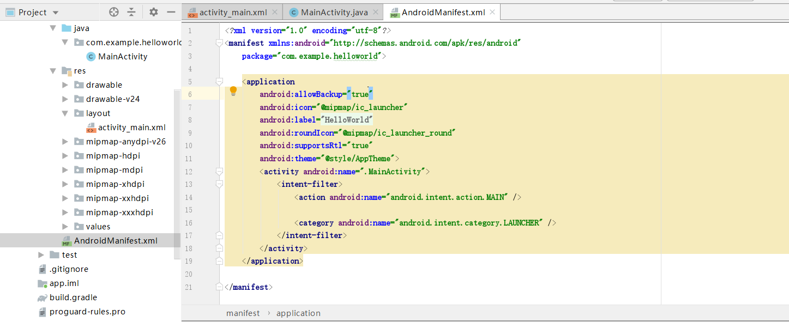
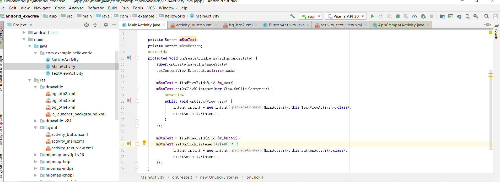
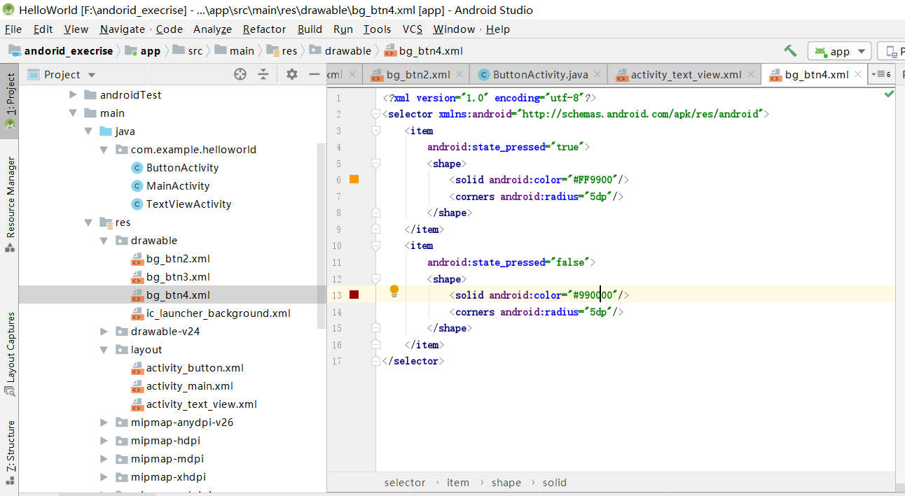
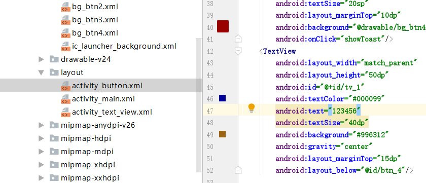
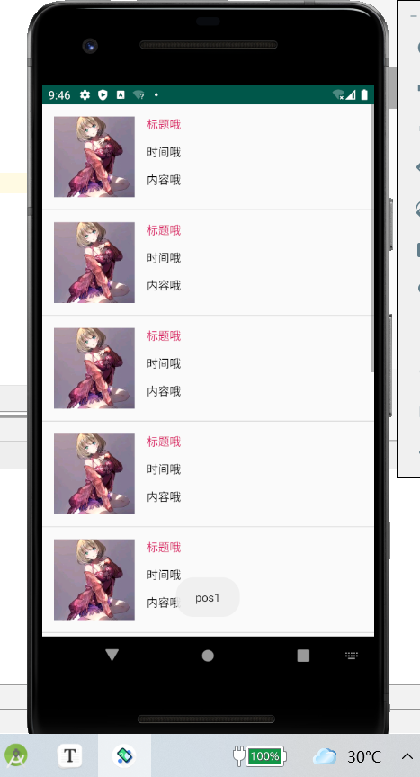
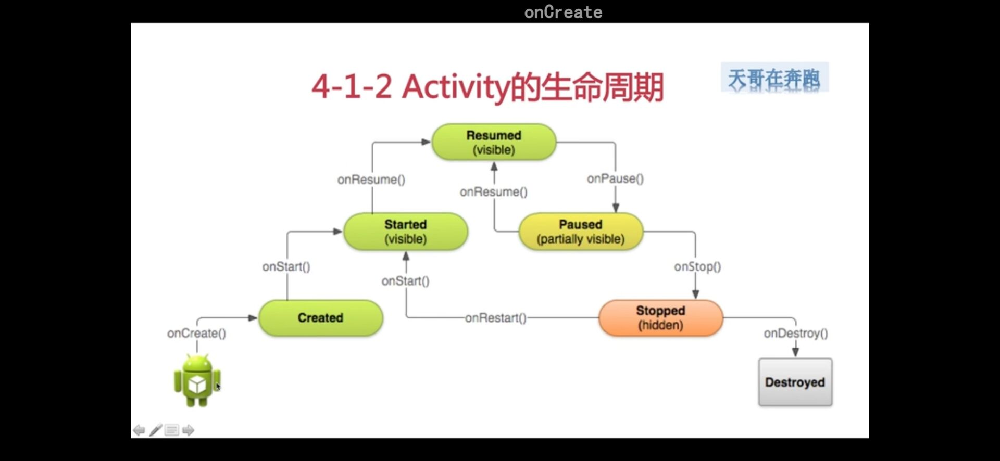
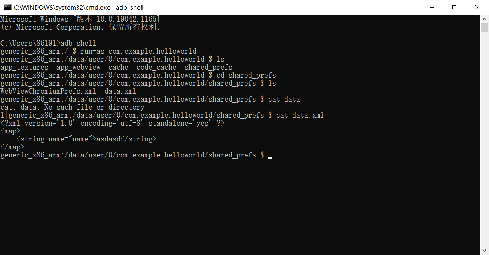

Android Studio
前置知识
反汇编
有空学
Intent （意图）
不知道
Activity 注册

运行项目之所以能够运行activity，因为我们在AndroidManifest.xml中声明了，每个activity都要注册。

bt3 = findViewById(R.id.btn_3); bt3.setOnClickListener(new View.OnClickListener() { @Override public void onClick(View view) { Toast.makeText(ButtonActivity.this,"3点击了一下",Toast.LENGTH_SHORT).show(); } });
mBtnButton = findViewById(R.id.bt_button); mBtnButton.setOnClickListener(new View.OnClickListener() { @Override public void onClick(View view) { Intent intent = new Intent(MainActivity.this,ButtonActivity.class); startActivity(intent); } });
MainActivity里面包括了其他的Activity，在其他的Activity类里面编写具体的点击行为。在mainactivity里面find，再添加监听

drawable 编辑按钮状态。

layout 每个布局的显示
Android中的13种Drawable
注意事项
- Drawable分为两种： 一种是我们普通的图片资源，在Android Studio中我们一般放到res/mipmap目录下， 另外我们如果把工程切换成Android项目模式，我们直接 往mipmap目录下丢图片即可，AS会自动分hdpi，xhdpi…！ 另一种是我们编写的XML形式的Drawable资源，我们一般把他们放到res/drawable目录 下，比如最常见的按钮点击背景切换的Selctor！
- 在XML我们直接通过@mipmap或者@drawable设置Drawable即可 比如: android:background = “@mipmap/iv_icon_zhu” / “@drawable/btn_back_selctor” 而在Java代码中我们可以通过Resource的getDrawable(R.mipmap.xxx)可以获得drawable资源 如果是为某个控件设置背景，比如ImageView，我们可以直接调用控件.getDrawale()同样 可以获得drawable对象！
- Android中drawable中的资源名称有约束，必须是：**[a-z0-9_.]*（即：只能是字母数字及和.）， 而且不能以数字开头，否则编译会报错： Invalid file name: must contain only [a-z0-9*.]！ 小写啊！！！！小写！！！小写！——重要事情说三遍~
ColorDrawable
在res/values目录下创建一个color.xml 文件,然后把要用到的颜色值写到里面,需要的时候通过@color获得相应的值
<?xml version="1.0" encoding="utf-8"?>
<resources>
<color name="material_grey_100">#fff5f5f5</color>
<color name="material_grey_300">#ffe0e0e0</color>
<color name="material_grey_50">#fffafafa</color>
<color name="material_grey_600">#ff757575</color>
<color name="material_grey_800">#ff424242</color>
<color name="material_grey_850">#ff303030</color>
<color name="material_grey_900">#ff212121</color>
</resources>
然后如果是在xml文件中话我们可以通过@color/xxx获得对应的color值 如果是在Java中:
int mycolor = getResources().getColor(R.color.mycolor);
btn.setBackgroundColor(mycolor);
另外有一点要注意,如果我们在Java中直接定义颜色值的话,要加上0x,而且不能把透明度漏掉:
int mycolor = 0xff123456;
btn.setBackgroundColor(mycolor);
NiewPatchDrawable
就是 .9 图。拉伸图片不失真。AS里面加这个必须有黑线。(不懂 不想管)
<!--pic9.xml-->
<!--参数依次为:引用的.9图片,是否对位图进行抖动处理-->
<?xml version="1.0" encoding="utf-8"?>
<nine-patch
xmlns:android="http://schemas.android.com/apk/res/android"
android:src="@drawable/dule_pic"
android:dither="true"/>
ShapeDrawable
Drawable 文件里面新建xml来画
形状的Drawable , 定义基本的几何图形,如(矩形,圆形,线条等),根元素是<shape../> 节点比较多，相关的节点如下：
- ① <**shape**>:
- ~ visible:设置是否可见
- ~ shape:形状,可选:rectangle(矩形,包括正方形),oval(椭圆,包括圆),line(线段),ring(环形)
- ~ innerRadiusRatio:当shape为ring才有效,表示环内半径所占半径的比率,如果设置了innerRadius, 他会被忽略
- ~ innerRadius:当shape为ring才有效,表示环的内半径的尺寸
- ~ thicknessRatio:当shape为ring才有效,表环厚度占半径的比率
- ~ thickness:当shape为ring才有效,表示环的厚度,即外半径与内半径的差
- ~ useLevel:当shape为ring才有效,表示是否允许根据level来显示环的一部分
- ②<**size**>:
- ~ width:图形形状宽度
- ~ height:图形形状高度
- ③<**gradient**>：后面GradientDrawable再讲~
- ④<**solid**>
- ~ color:背景填充色,设置solid后会覆盖gradient设置的所有效果!!!!!!
- ⑤<**stroke**>
- ~ width:边框的宽度
- ~ color:边框的颜色
- ~ dashWidth:边框虚线段的长度
- ~ dashGap:边框的虚线段的间距
- ⑥<**conner**>
- ~ radius:圆角半径,适用于上下左右四个角
- ~ topLeftRadius,topRightRadius,BottomLeftRadius,tBottomRightRadius: 依次是左上,右上,左下,右下的圆角值,按自己需要设置!
- ⑦<**padding**>
- left,top,right,bottm:依次是左上右下方向上的边距!
<?xml version="1.0" encoding="utf-8"?>
<shape xmlns:android="http://schemas.android.com/apk/res/android">
<!-- 设置一个黑色边框 -->
<stroke android:width="2px" android:color="#000000"/>
<!-- 渐变 -->
<gradient
android:angle="270"
android:endColor="#C0C0C0"
android:startColor="#FCD209" />
<!-- 设置一下边距,让空间大一点 -->
<padding
android:left="5dp"
android:top="5dp"
android:right="5dp"
android:bottom="5dp"/>
</shape>
GradientDrawable
一个具有渐变区域的Drawable，可以实现线性渐变,发散渐变和平铺渐变效果 核心节点：<**gradient**/>，有如下可选属性：
- startColor:渐变的起始颜色
- centerColor:渐变的中间颜色
- endColor:渐变的结束颜色
- type:渐变类型,可选(linear,radial,sweep), 线性渐变(可设置渐变角度),发散渐变(中间向四周发散),平铺渐变
- centerX:渐变中间颜色的x坐标,取值范围为:0~1
- centerY:渐变中间颜色的Y坐标,取值范围为:0~1
- angle:只有linear类型的渐变才有效,表示渐变角度,必须为45的倍数哦
- gradientRadius:只有radial和sweep类型的渐变才有效,radial必须设置,表示渐变效果的半径
- useLevel:判断是否根据level绘制渐变效果
<shape xmlns:android="http://schemas.android.com/apk/res/android"
android:innerRadius="10dp"
android:shape="ring"
android:thickness="100dp"
android:useLevel="false" >
<gradient
android:centerColor="#FFEB82"
android:endColor="#3599D2"
android:gradientRadius="250"
android:startColor="#DEACAB"
android:type="radial"
android:useLevel="false" />
</shape>
BitmapDrawable
对Bitmap的一种封装,可以设置它包装的bitmap在BitmapDrawable区域中的绘制方式,有: 平铺填充,拉伸填或保持图片原始大小!以<**bitmap**>为根节点! 可选属性如下：
- src:图片资源~
- antialias:是否支持抗锯齿
- filter:是否支持位图过滤,支持的话可以是图批判显示时比较光滑
- dither:是否对位图进行抖动处理
- gravity:若位图比容器小,可以设置位图在容器中的相对位置
- tileMode:指定图片平铺填充容器的模式,设置这个的话,gravity属性会被忽略,有以下可选值: disabled(整个图案拉伸平铺),clamp(原图大小), repeat(平铺),mirror(镜像平铺)
<LinearLayout
android:layout_width="match_parent"
android:layout_height="1000dp"
android:layout_below="@id/dview3"
android:orientation="vertical"
android:background="@drawable/bitmap_try">
</LinearLayout>
<bitmap xmlns:android="http://schemas.android.com/apk/res/android"
android:dither="true"
android:src="@drawable/ic_launcher"
android:tileMode="mirror" />
InsetDrawable
表示把一个Drawable嵌入到另外一个Drawable的内部，并且在内部留一些间距
类似与Drawable的padding属性,但padding表示的是Drawable的内容与Drawable本身的边距!
而InsetDrawable表示的是两个Drawable与容器之间的边距,当控件需要的背景比实际的边框 小的时候,比较适合使用InsetDrawable,
比如使用这个可以解决我们自定义Dialog与屏幕之间 的一个间距问题,相信做过的朋友都知道,即使我们设置了layout_margin的话也是没用的,这个 时候就可以用到这个InsetDrawable了!只需为InsetDrawable设置一个insetXxx设置不同 方向的边距,然后为设置为Dialog的背景即可！
相关属性如下：
drawable:引用的Drawable,如果为空,必须有一个Drawable类型的子节点!
visible:设置Drawable是否额空间
insetLeft,insetRight,insetTop,insetBottm:设置左右上下的边距
<inset xmlns:android="http://schemas.android.com/apk/res/android"
android:drawable="@drawable/test1"
android:insetBottom="10dp"
android:insetLeft="10dp"
android:insetRight="10dp"
android:insetTop="10dp" />
ClipDrawable (学了Handler来填坑)
Clip可以译为剪的意思,我们可以把 ClipDrawable 理解为从位图上剪下一个部分;
Android中的进度条就是使用ClipDrawable来实现的,他根据设置level的值来决定剪切 区域的大小,根节点是<**clip**>
相关属性如下：
- clipOrietntion:设置剪切的方向,可以设置水平和竖直2个方向
- gravity:从那个位置开始裁剪
- drawable:引用的drawable资源,为空的话需要有一个Drawable类型的子节点 ps:这个Drawable类型的子节点:就是在<clip里>加上这样的语句: 这样…
RotateDrawable （handler）
用来对Drawable进行旋转,也是通过setLevel来控制旋转的,最大值也是:10000
相关属性如下：
- fromDegrees:起始的角度,,对应最低的level值,默认为0
- toDegrees:结束角度,对应最高的level值,默认360
- pivotX:设置参照点的x坐标,取值为0~1,默认是50%,即0.5
- pivotY:设置参照点的Y坐标,取值为0~1,默认是50%,即0.5 ps:如果出现旋转图片显示不完全的话可以修改上述两个值解决!
- drawable:设置位图资源
- visible:设置drawable是否可见!
AnimationDrawable)()
AnimationDrawable是用来实现Android中帧动画的,
就是把一系列的 Drawable，按照一定得顺序一帧帧地播放；Android中动画比较丰富,有传统补间动画,平移, 缩放等等效果
相关属性方法:
oneshot:设置是否循环播放,false为循环播放!!!
duration:帧间隔时间,通常我们会设置为300毫秒 我们获得AniamtionDrawable实例后，需要调用它的start()方法播放动画，另外要注意 在OnCreate()方法中调用的话,是没有任何效果的,因为View还没完成初始化,我们可以 用简单的handler来延迟播放动画!当然还有其他的方法,可见下述链接: Android AnimationDrawable运行的几种方式 使用AnimationDrawable来实现帧动画真的是非常方便的~
LayerDrawable
层图形对象，包含一个Drawable数组，然后按照数组对应的顺序来绘制他们，索引值最大的Drawable会被绘制在最上层！
虽然这些Drawable会有交叉或者重叠的区域，但 他们位于不同的层，所以并不会相互影响，以<**layer-list**>作为根节点！
相关属性如下：
- drawable:引用的位图资源,如果为空徐璈有一个Drawable类型的子节点
- left:层相对于容器的左边距
- right:层相对于容器的右边距
- top:层相对于容器的上边距
- bottom:层相对于容器的下边距
- id:层的id
自定义进度条
<layer-list xmlns:android="http://schemas.android.com/apk/res/android">
<item android:id="@android:id/background">
<shape android:shape="rectangle">
<solid android:color="#C2C2C2" />
<corners android:radius="50dp" />
</shape>
</item>
<item android:id="@android:id/progress">
<clip>
<shape android:shape="rectangle">
<solid android:color="#BCDA73" />
<corners android:radius="50dp" />
</shape>
</clip>
</item>
</layer-list>
再在布局文件里面加 SeekBar 拖动进度条组件
<SeekBar
android:layout_width="match_parent"
android:layout_height="30dp"
android:indeterminateDrawable="@android:drawable/progress_indeterminate_horizontal"
android:indeterminateOnly="false"
android:maxHeight="10dp"
android:minHeight="5dp"
android:layout_marginTop="20dp"
android:progressDrawable="@drawable/layer_list_try"
tools:ignore="MissingConstraints"
android:thumb="@drawable/ic_1"/>
TransitionDrawable
创建xml文件
<?xml version="1.0" encoding="utf-8"?>
<transition xmlns:android="http://schemas.android.com/apk/res/android" >
<item android:drawable="@mipmap/ic_bg_meizi1"/>
<item android:drawable="@mipmap/ic_bg_meizi2"/>
</transition>
然后布局文件里加个ImageView，然后把src设置成上面的这个drawable ：
<?xml version="1.0" encoding="utf-8"?>
<androidx.constraintlayout.widget.ConstraintLayout xmlns:android="http://schemas.android.com/apk/res/android"
xmlns:app="http://schemas.android.com/apk/res-auto"
xmlns:tools="http://schemas.android.com/tools"
android:layout_width="match_parent"
android:layout_height="match_parent"
tools:context=".TranslateActivity">
<ImageView
android:layout_width="match_parent"
android:layout_height="wrap_content"
android:src="@drawable/translate_try"
tools:ignore="MissingConstraints" />
</androidx.constraintlayout.widget.ConstraintLayout>
Activity中代码
public class MainActivity extends AppCompatActivity {
private ImageView img_show;
@Override
protected void onCreate(Bundle savedInstanceState) {
super.onCreate(savedInstanceState);
setContentView(R.layout.activity_main);
img_show = (ImageView) findViewById(R.id.img_show);
TransitionDrawable td = (TransitionDrawable) img_show.getDrawable();
td.startTransition(3000);
//你可以可以反过来播放，使用reverseTransition即可~
//td.reverseTransition(3000);
}
}
LevelListDrawable
用来管理一组Drawable的,我们可以为里面的drawable设置不同的level
当他们绘制的时候，会根据level属性值获取对应的drawable绘制到画布上，
*根节点 为:<***level-list**>*他并没有可以设置的属性，我们能做的只是设置每个<***item**>的属性
item可供设置的属性如下：
- drawable:引用的位图资源,如果为空徐璈有一个Drawable类型的子节点
- minlevel:level对应的最小值
- maxlevel:level对应的最大值
StateListDrawable（常用）
为按钮设置不同状态的drawable的<***selctor***>
可供设置的属性如下：
- drawable:引用的Drawable位图,我们可以把他放到最前面,就表示组件的正常状态~
- state_focused:是否获得焦点
- state_window_focused:是否获得窗口焦点
- state_enabled:控件是否可用
- state_checkable:控件可否被勾选,eg:checkbox
- state_checked:控件是否被勾选
- state_selected:控件是否被选择,针对有滚轮的情况
- state_pressed:控件是否被按下
- state_active:控件是否处于活动状态,eg:slidingTab
- state_single:控件包含多个子控件时,确定是否只显示一个子控件
- state_first:控件包含多个子控件时,确定第一个子控件是否处于显示状态
- state_middle:控件包含多个子控件时,确定中间一个子控件是否处于显示状态
- state_last:控件包含多个子控件时,确定最后一个子控件是否处于显示状态
那就先通过shapeDrawable来画两个圆角矩形，只是颜色不一样而已：
shape_btn_normal.xml：
<?xml version="1.0" encoding="utf-8"?>
<shape xmlns:android="http://schemas.android.com/apk/res/android"
android:shape="rectangle">
<solid android:color="#DD788A"/>
<corners android:radius="5dp"/>
<padding android:top="2dp" android:bottom="2dp"/>
</shape>
接着我们来写个selctor：selctor_btn.xml：
<?xml version="1.0" encoding="utf-8"?>
<selector xmlns:android="http://schemas.android.com/apk/res/android">
<item android:state_pressed="true" android:drawable="@drawable/shape_btn_pressed"/>
<item android:drawable="@drawable/shape_btn_normal"/>
</selector>
然后按钮设置android:background=”@drawable/selctor_btn”就可以了~ 你可以根据自己需求改成矩形或者椭圆，圆形等！
LayoutInfalter
概念
用于加载布局。
一般是用这样的语句来加载：但这个其实也是用的LayoutInfalter。
setContentView(R.layout.activity_linear_recycle);
用法
实例化：
LayoutInflater layoutInflater = LayoutInflater.from(context);
得到LayoutInflater的实例之后就可以调用它的inflate()方法来加载布局:
layoutInflater.inflate(resourceId, root);
第一个参数就是要加载的布局id，第二个参数是指给该布局的外部再嵌套一层父布局，如果不需要就直接传null
如果我们想保证item的视图中的参数不被改变，我们需要使用
**convertView = inflater.inflate(R.layout.item_list, parent,false);这种方式进行视图的填充 **
LinearLayout的addView()方法将它添加到LinearLayout中。
布局文件.addview(组件);
视图绘制流程
要知道，任何一个视图都不可能凭空突然出现在屏幕上，它们都是要经过非常科学的绘制流程后才能显示出来的。
每一个视图的绘制过程都必须经历三个最主要的阶段，即onMeasure()、onLayout()和onDraw()。
onMeasuer()
一个界面的展示可能会涉及到很多次的measure，因为一个布局中一般都会包含多个子视图，每个视图都需要经历一次measure过程。ViewGroup中定义了一个measureChildren()方法来去测量子视图的大小
public class MyView extends View {
...... @Override protected void onMeasure(int widthMeasureSpec, int heightMeasureSpec) { setMeasuredDimension(200, 200); }}
需要注意的是，在setMeasuredDimension()方法调用之后，我们才能使用getMeasuredWidth()和getMeasuredHeight()来获取视图测量出的宽高，以此之前调用这两个方法得到的值都会是0。
由此可见，视图大小的控制是由父视图、布局文件、以及视图本身共同完成的，父视图会提供给子视图参考的大小，而开发人员可以在XML文件中指定视图的大小，然后视图本身会对最终的大小进行拍板。
onLayout()
大小测量好了之后，Layout方法是用于给视图进行布局的，也就是确定视图的位置。
View中的onLayout()方法就是一个空方法，因为onLayout()过程是为了确定视图在布局中所在的位置，而这个操作应该是由布局来完成的，即父视图决定子视图的显示位置。既然如此，我们来看下ViewGroup中的onLayout()方法是怎么写的吧，代码如下：
@Override
protected abstract void onLayout(boolean changed, int l, int t, int r, int b);
可以看到，ViewGroup中的onLayout()方法是一个抽象方法，这就意味着所有ViewGroup的子类都必须重写这个方法。没错，像LinearLayout、RelativeLayout等布局，都是重写了这个方法，然后在内部按照各自的规则对子视图进行布局的。
自定义的这个布局目标很简单，只要能够包含一个子视图，并且让子视图正常显示出来就可以了。那么就给这个布局起名叫做SimpleLayout吧，代码如下所示：
public class SimpleLayout extends ViewGroup {
public SimpleLayout(Context context, AttributeSet attrs) { super(context, attrs); } @Override protected void onMeasure(int widthMeasureSpec, int heightMeasureSpec) { super.onMeasure(widthMeasureSpec, heightMeasureSpec); if (getChildCount() > 0) { View childView = getChildAt(0); measureChild(childView, widthMeasureSpec, heightMeasureSpec); } } @Override protected void onLayout(boolean changed, int l, int t, int r, int b) { if (getChildCount() > 0) { View childView = getChildAt(0); childView.layout(0, 0, childView.getMeasuredWidth(), childView.getMeasuredHeight()); } }}
onMeasure()方法会在onLayout()方法之前调用，因此这里在onMeasure()方法中判断SimpleLayout中是否有包含一个子视图，如果有的话就调用measureChild()方法来测量出子视图的大小。
接着在onLayout()方法中同样判断SimpleLayout是否有包含一个子视图，然后调用这个子视图的layout()方法来确定它在SimpleLayout布局中的位置，这里传入的四个参数依次是0、0、childView.getMeasuredWidth()和childView.getMeasuredHeight()，分别代表着子视图在SimpleLayout中左上右下四个点的坐标。其中，调用childView.getMeasuredWidth()和childView.getMeasuredHeight()方法得到的值就是在onMeasure()方法中测量出的宽和高。
这样就已经把SimpleLayout这个布局定义好了，下面就是在XML文件中使用它了，如下所示：
<com.example.viewtest.SimpleLayout xmlns:android=”http://schemas.android.com/apk/res/android"
android:layout_width=”match_parent”
android:layout_height=”match_parent” ><ImageView android:layout_width="wrap_content" android:layout_height="wrap_content" android:src="@drawable/ic_launcher" /></com.example.viewtest.SimpleLayout>
onDraw()
这里真正地开始对视图进行绘制。ViewRoot中的代码会继续执行并创建出一个Canvas对象，然后调用View的draw()方法来执行具体的绘制工作。draw()方法内部的绘制过程总共可以分为六步，其中第二步和第五步在一般情况下很少用到，因此这里我们只分析简化后的绘制过程。
draw方法绘制整个界面的过程具体如下：
- Draw the background(绘制背景)
- If necessary, save the canvas’ layers to prepare for fading（如果需要，为保存这层为边缘的滑动效果作准备）
- Draw view’s content（绘制内容）
- Draw children（绘制子View）
- If necessary, draw the fading edges and restore layers（如果需要，绘制边缘效果并且保存图层）
- Draw decorations (scrollbars for instance)（绘制边框，比如scrollbars，TextView）
接口回调
产生接口回调的场景
在现实生活中,产生接口回调的场景很简单,比如我主动叫你帮我做一件事,然后你做完这件事之后会通知我,”通知我”这个动作就是接口回调的动作.接口回调重在理解思就好.再举个例子用于下面的代码演示,老师让学生做课堂练习,学生做完练习后并告诉老师.什么是接口回调
在Java的层面简单的说一下接口回调:现有一个接口A,和它的实现类A1,和另外一个有接口A引用的类B,因为类B中有接口A的引用,在B执行完方法后,可以通过接口A的引用,告诉A执行完成了这个方法.由于A是一个接口,所以具体接收执行完成这个方法在它是实现类A1中体现.在代码中的使用
以上面老师叫学生做课堂作业为例,我们先创建一个回调接口,以及用于接收学生做完课堂作业的消息
public interface BackInterface {
void backMethod();
}
然后定义一个实现类Teacher,功能是让学生做课堂练习,接收学生做完课堂练习的通知
public class Teacher implements BackInterface {
//因为老师要告诉学生做课堂练习,所以这个传一个学生的引用
private Student student;
public Teacher(Student student){
this.student = student;
}
//老师告诉学生做课堂练习
public void doEvent(){
System.out.println("老师让学生做练习...");
student.doPractice(this);
}
//用于接收接口回调的消息
@Override
public void backMethod() {
System.out.println("老师接收到学生做完课堂练习的消息");
}
}
学生类,功能是做练习,做完之后并告诉老师(回调)
public class Student {
//学生做课堂练习,并告诉老师
public void doPractice(BackInterface BackInterface) {
System.out.println("学生做练习...");
System.out.println("学生告诉老师做完练习...");
BackInterface.backMethod();
}
}
进行测试:
public class BackDemo {
public static void main(String[] args) {
Teacher teacher = new Teacher(new Student());
teacher.doEvent();
}
}
还有就是为了代码的简洁,我们常常把Teacher类写成匿名内部类的形式
布局
LinearLayout（线性布局）
属性讲解
- android:id ：定义布局id，即标识符，可以通过id来找到该布局或者控件
- android :layout_width ：布局宽度，有match_parent ,wrap_content，fill_paren
- android:layout_height ：布局高度，有match_parent,wrap_content，fill_paren
- android:background ：设置布局的背景，可以用颜色，也可以使用图片，颜色常以六位的十六进制表示
- android:layout_margin ：外边距，布局或控件距离外部元素的边距
- android:layout_padding ：内边距，布局或控件距离内部元素的边距
- android:orientation ：布局方向，水平布局horizontal，垂直布局vertical
- android:gravity ：gravity用于设置容器内组件的对齐方式
- android:layout_weight：权重，除了被显示占据的空间以外的的空间，然后根据权重的大小来分配空间，使用权重通常会把分配该权重方向的宽度设置为0dp，如果未设置0dp，则该控件会占据指定的宽度，然后再加上根据权重来分配的空间
- LinearLayout 布局里面可以有View视图，也可以有各种布局
例子（注意是怎么嵌套的）
<LinearLayout android:id="@+id/zwy_ll_1" android:layout_width="262dp" android:layout_height="560dp" android:background="#000000" android:gravity="left" android:orientation="vertical" android:paddingLeft="10dp"> <View android:layout_width="match_parent" android:layout_height="71dp" android:layout_weight="1" android:background="#00FF00" /> <View android:layout_width="match_parent" android:layout_height="71dp" android:layout_weight="1" android:background="#0000FF" /> </LinearLayout>
RelativeLayout（相对布局）
属性讲解
根据父类组件定位
- layout_alignParentLeft：左对齐
- layout_alignParentRight：右对齐
- layout_alignParentTop：顶部对齐
- layout_alignParentBottom：底部对齐
- layout_centerHorizontal：水平居中
- layout_centerVertical：垂直居中
- layout_centerInParent：中央位置
根据兄弟组件定位
- layout_toLeftOf：参考组件的左边
- layout_toRightOf：参考组件的右边
- layout_above：参考组件的上方
- layout_below：参考组件的下方
- layout_alignTop：对齐参考组件的上边界
- layout_alignBottom：对齐参考组件的下边界
- layout_alignLeft：对齐参考组件的左边界
- layout_alignRight：对齐参考组件的右边界
margin（偏移）
设置组件与父容器的边距，又叫偏移。（margin的参数可以设置为负数）
- layout_margin：设置组件上下左右的偏移量
- layout_marginLeft：设置组件距离父容器左边界的偏移量
- layout_marginRight：设置组件距离父容器右边界的偏移量
- layout_marginTop：设置组件距离父容器上边界的偏移量
- layout_marginBottom：设置组件距离父容器下边界的偏移量
padding（填充）：
设置组件内部元素间与组件边界两者间的填充距离
- layout_padding：往内部元素的上下左右各填充一定距离
- layout_paddingLeft：往内部元素的左边填充一定距离
- layout_paddingRight：往内部元素的右边填充一定距离
- layout_paddingTop：往内部元素的上边填充一定距离
- layout_paddingBottom：往内部元素的下边填充一定距离
例子（差不多的）
<RelativeLayout android:layout_width="match_parent" android:layout_height="match_parent" android:background="#000000" android:layout_margin="30dp" android:padding="15dp"> <View android:id="@+id/r_1" android:layout_width="100dp" android:layout_height="match_parent" android:layout_centerInParent="true" android:background="#00FF00"> </View> <View android:layout_width="100dp" android:layout_height="match_parent" android:layout_toRightOf="@+id/r_1" android:background="#7FFFD4"> </View> </RelativeLayout>
Button衍生组件
打印
mRg1 = findViewById(R.id.rg_1); //找到按钮组 mRg1.setOnCheckedChangeListener(new RadioGroup.OnCheckedChangeListener() {//设置监听，匿名类 @Override public void onCheckedChanged(RadioGroup radioGroup, int i) { RadioButton radioButton = radioGroup.findViewById(i);//找到按钮 Toast.makeText(RadioButtonActivity.this,radioButton.getText(),Toast.LENGTH_SHORT).show(); //Toast打印 } });
Button 按钮
<Button android:id="@+id/btn_4" android:layout_width="match_parent" android:layout_height="wrap_content" android:text="按钮4" android:layout_below="@id/btn_3" android:textSize="20sp" android:layout_marginTop="10dp" android:background="@drawable/bg_btn4" android:textAllCaps="false" //让显示的文字小写 android:onClick="showToast"/> //showToast在ButtonActivity里面写
public void showToast(View view){ Toast.makeText(this,"点击了一下",Toast.LENGTH_SHORT).show(); }
<item android:state_pressed="true"> <shape> <solid android:color="#FF9900"/> <corners android:radius="5dp"/> </shape> </item> <item android:state_pressed="false"> <shape> <solid android:color="#990000"/> <corners android:radius="5dp"/> </shape> </item>//drawable里面的一些属性
EditText 文本框
<EditText android:layout_width="match_parent" android:layout_height="50dp" android:id="@+id/et_2" android:textSize="16sp" android:textColor="#FF0ff2" android:layout_below="@id/et_1" android:layout_marginTop="15dp" android:paddingLeft="10dp" android:hint="你的密码"//提示词 android:background="@drawable/bg_username" android:drawableLeft="@drawable/maomao"//图片左边间隔 android:drawablePadding="50dp" android:maxLines="1" android:inputType="textPassword"/>//输入种类****，number就是弹出数字输入
RadioButton 单选按钮
<RadioGroup android:layout_width="wrap_content" android:layout_height="wrap_content" android:id="@+id/rg_1" android:orientation="vertical"> //按钮组 这样一个组里面就只能选中一个 <RadioButton android:checked="true" //默认选中，必须有id才能选 android:layout_width="wrap_content" android:button="@null" //不显示按钮圈圈 android:layout_height="wrap_content" android:id="@+id/rb_1" android:text="男" android:textSize="20sp" android:textColor="#FF6600"/> <RadioButton android:layout_width="wrap_content" android:layout_height="wrap_content" android:id="@+id/rb_2" android:text="女" android:textSize="20sp" android:textColor="#FF6600"/> </RadioGroup>
CheckBox 复选框
<item android:state_checked="false" android:drawable="@drawable/cb2">//一个图片 </item> <item android:state_checked="true" android:drawable="@drawable/cb1"> </item>
<LinearLayout android:layout_width="match_parent" android:layout_height="wrap_content" android:orientation="horizontal" android:layout_below="@id/tv_2"> <CheckBox android:layout_width="wrap_content" android:layout_height="wrap_content" android:id="@+id/cb_5" android:text="编程" android:button="@drawable/bg_checkbox" android:textSize="20sp"/> <CheckBox android:layout_width="wrap_content" android:layout_height="wrap_content" android:id="@+id/cb_6" android:button="@drawable/bg_checkbox" android:text="羽毛球" android:textSize="20sp"/> </LinearLayout>
ImageView 图片
例子
fitXY：撑满控件，宽高比可能改变
fitCenter：保持宽高比缩放，直至能够完全显示
centerCropL:保持宽高比缩放，直到完全覆盖控件，裁剪显示
<ImageView android:id="@+id/im_1" android:layout_marginBottom="15dp" android:layout_width="150dp" android:layout_height="250dp" android:background="#FF9900" android:src="@drawable/maomao" //图片素材 android:scaleType="centerCrop"/> //图片布局 <ImageView android:id="@+id/im_2" android:layout_marginBottom="15dp" android:layout_width="150dp" android:layout_height="250dp" android:background="#FF9900" android:layout_below="@id/im_1" android:src="@drawable/maomao" android:scaleType="centerCrop"/>
mIv2 = findViewById(R.id.im_2); String str = "https://gimg2.baidu.com/image_search/src=http%3A%2F%2Fi0.hdslb.com%2Fbfs%2Farticle%2Fad34c0e6ab637ddee6967666487bb24c4468ccc8.jpg&refer=http%3A%2F%2Fi0.hdslb.com&app=2002&size=f9999,10000&q=a80&n=0&g=0n&fmt=jpeg?sec=1631256704&t=d6646d5a23bdf6487aa23aad2c68d118"; Glide.with(this).load(str).into(mIv2);
这个是导入网络图片，记得要在AndroidManifes.xml里面加一个权限
<uses-permission android:name="android.permission.INTERNET"/>
Glide包
jar包导入或者build.gradle导入。
方便我们快速把网络图片作为本地图片导入的第三方库
View布局
ListView 列表视图
ListViewActivity
mLv1 = findViewById(R.id.lv_1); mLv1.setAdapter(new MyListAdapter(ListViewActivity.this)); mLv1.setOnItemClickListener(new AdapterView.OnItemClickListener() { @Override public void onItemClick(AdapterView<?> adapterView, View view, int i, long l) { Toast.makeText(ListViewActivity.this,"pos"+i,Toast.LENGTH_SHORT).show(); } });
MyListAdapter
public class MyListAdapter extends BaseAdapter { private Context myContext; private LayoutInflater myLayoutInflater; public MyListAdapter(Context context){ this.myContext = context; myLayoutInflater = LayoutInflater.from(context); } @Override public int getCount() {return 10;}//表格个数 @Override public Object getItem(int i) {return null;} @Override public long getItemId(int i) { return 0;} //弄一个静态类 static class ViewHolder{ public ImageView imageView; public TextView texttitle,texttime,textcontext; } //重要 @Override public View getView(int i, View view, ViewGroup viewGroup) { ViewHolder holder = null; if(view == null){ view = myLayoutInflater.inflate(R.layout.layout_list_item,null);//相当于找到view holder = new ViewHolder(); holder.imageView = view.findViewById(R.id.iv); holder.texttime = view.findViewById(R.id.tv_time); holder.texttitle = view.findViewById(R.id.tv_title); holder.textcontext = view.findViewById(R.id.tv_context); view.setTag(holder); }else { holder = (ViewHolder) view.getTag(); } holder.texttitle.setText("标题哦"); holder.texttime.setText("时间哦"); holder.textcontext.setText("内容哦"); Glide.with(myContext).load ("https://img0.baidu.com/it/u=1292206523,2644532521&fm=26&fmt=auto&gp=0.jpg").into(holder.imageView); return view; } }
layout layout_list_item.xml

<ImageView android:layout_width="100dp" android:layout_height="100dp" android:id="@+id/iv" android:scaleType="centerCrop" android:background="#aaaaaa"/>//图片 <LinearLayout android:layout_width="match_parent" android:layout_height="wrap_content" android:orientation="vertical" android:layout_marginRight="15dp"> <TextView android:layout_width="wrap_content" android:layout_height="wrap_content" android:id="@+id/tv_title" android:layout_marginLeft="15dp" android:textColor="@color/colorAccent" android:text="Hello"/> <TextView android:layout_width="wrap_content" android:layout_height="wrap_content" android:id="@+id/tv_time" android:text="2021.8.11" android:textColor="@color/colorBlack" android:paddingTop="15dp" android:paddingLeft="15dp"/> <TextView android:layout_width="wrap_content" android:layout_height="wrap_content" android:id="@+id/tv_context" android:text="内容" android:textColor="@color/colorBlack" android:paddingTop="15dp" android:paddingLeft="15dp"/> </LinearLayout>
GridView 网格视图
类似于ListView 了解即可
ScrollView 滚动布局
<HorizontalScrollView android:layout_width="wrap_content" android:layout_height="wrap_content"> <LinearLayout android:layout_width="wrap_content" android:layout_height="wrap_content" android:orientation="horizontal"> <Button android:layout_width="200dp" android:layout_height="200dp" android:text="Test"/> <Button android:layout_width="200dp" android:layout_height="200dp" android:text="Test"/> </LinearLayout> </HorizontalScrollView>
注意：直接子布局只能有一个
RecyclerView ( 重要 )
基本操作
public class LinearRecycleActivity extends AppCompatActivity { private RecyclerView mRvmain; @Override protected void onCreate(Bundle savedInstanceState) { super.onCreate(savedInstanceState); setContentView(R.layout.activity_linear_recycle); mRvmain = findViewById(R.id.rv_main); mRvmain.setLayoutManager(new LinearLayoutManager(LinearRecycleActivity.this));//布局管理器 mRvmain.addItemDecoration(new MyDecoration()); mRvmain.setAdapter(new LinearAdapter(LinearRecycleActivity.this, new LinearAdapter.OnItemClickListener() { @Override public void onClick(int pos) { Toast.makeText(LinearRecycleActivity.this,"click..."+pos,Toast.LENGTH_SHORT).show(); } })); } }
public class LinearAdapter extends RecyclerView.Adapter <LinearAdapter.LinearViewHolder>{ private Context mContext; private OnItemClickListener mlistener; public LinearAdapter(Context context,OnItemClickListener listener){ this.mContext = context; this.mlistener = listener; } @NonNull @Override public LinearAdapter.LinearViewHolder onCreateViewHolder(@NonNull ViewGroup parent, int viewType) { return new LinearViewHolder(LayoutInflater.from(mContext).inflate(R.layout.layout_linear_item,parent,false)); } @Override public void onBindViewHolder(@NonNull LinearAdapter.LinearViewHolder holder, final int position) { holder.textView.setText("hello hello"); holder.itemView.setOnClickListener(new View.OnClickListener() { @Override public void onClick(View view) { mlistener.onClick(position); } }); } @Override public int getItemCount() { return 30; } class LinearViewHolder extends RecyclerView.ViewHolder{ private TextView textView; public LinearViewHolder(@NonNull View itemView) { super(itemView); textView = itemView.findViewById(R.id.tv_title); } } public interface OnItemClickListener{ void onClick(int pos); } }
设置布局文件
设置布局管理器
mRvmain.setLayoutManager(new LinearLayoutManager(LinearRecycleActivity.this));
新建Adapter (详细在下一个标题处)
- 方法重载 onCreateViewHolder：创建默认的视图。需要自己画。R.layout.layout_linear_item 引入。
public LinearAdapter.LinearViewHolder onCreateViewHolder(@NonNull ViewGroup parent, int viewType) {
return new LinearViewHolder(LayoutInflater.from(mContext).inflate(R.layout.layout_linear_item,parent,false)); }- 方法重载 onBindViewHolder：创建好后再次自定义。
- 方法重载 getItemCount： 列表长度
设置Adapter
mRvmain.setAdapter(new LinearAdapter(LinearRecycleActivity.this）;
监听事件
方法一：onCreateViewHolder中找到holder.itemView.setOnClickListener()………….
方法二：回调函数（要从主Activity里面理解）
Adapter里面写接口
public interface OnItemClickListener{
void onClick(int pos);}
Adapter里面新加变量，并写构造函数，从而实现pos的传递
ItemDecoration
mRvmain.addItemDecoration(new MyDecoration());
class MyDecoration extends RecyclerView.ItemDecoration{
@Override
public void getItemOffsets(@NonNull Rect outRect, @NonNull View view, @NonNull RecyclerView parent, @NonNull RecyclerView.State state) {
super.getItemOffsets(outRect, view, parent, state);
outRect.set(0,0,0, getResources().getDimensionPixelOffset(R.dimen.dividerHight) );
} //要在Value里面加一个dimen
@Override
public void onDraw(@NonNull Canvas c, @NonNull RecyclerView parent, @NonNull RecyclerView.State state) {
Paint mpaint = new Paint();
mpaint.setColor(Color.BLUE);
super.onDraw(c, parent, state);
int ChildCount = parent.getChildCount();
for(int i = 0;i<ChildCount ; i++){
View view = parent.getChildAt(i);
int index = parent.getChildAdapterPosition(view);
float dividerTop = view.getTop() - 1;
float dividerLeft = parent.getPaddingLeft();
float dividerBottom = view.getTop();
float dividerRight = parent.getWidth() - parent.getPaddingRight();
c.drawRect(dividerLeft,dividerTop,dividerRight,dividerBottom,mpaint);
}
}
}
布局管理器
mRvmain.setLayoutManager(new LinearLayoutManager(LinearRecycleActivity.this));//布局管理器
布局管理器有多种，自己选择。线性，网格，瀑布流。
ViewType
同时显示多种视图
@Override public int getItemViewType(int position) { if(position%2 == 0){ return 0; }else return 1; }
轮子 XRecylerView 库
引用库
compile ‘com.jcodecraeer:xrecyclerview:1.5.8’
创建控件 xml 文件
方法
recyclerView.setPullRefreshEnabled(true); recyclerView.setLoadingMoreEnabled(false);//上拉下拉刷新 recyclerView.setRefreshProgressStyle(ProgressStyle.BallSpinFadeLoader); recyclerView.setLoadingMoreProgressStyle(ProgressStyle.BallRotate); recyclerView.setArrowImageView(R.drawable.iconfont_downgrey);//设置上拉下拉刷新的样式 recyclerView.getDefaultRefreshHeaderView().setRefreshTimeVisible(true); View header = LayoutInflater.from(this).inflate(R.layout.recyclerview_header，(ViewGroup)findViewById(android.R.id.content),false); recyclerView.addHeaderView(header);//设置头部 //recyclerView.getDefaultFootView().setLoadingHint("自定义加载中提示"); recyclerView.getDefaultFootView().setNoMoreHint("自定义加载完毕提示");//刷新提示 recyclerView.setLoadingListener(new XRecyclerView.LoadingListener() { @Override public void onRefresh() { new Handler().postDelayed(new Runnable(){ public void run() { InternextData(2); } }, 2000); } @Override public void onLoadMore() { } });//设置刷新的回调（onRefrsh为刷新回调，onLoadMore为下拉更新） lists.clear(); lists.addAll( ReadAllLock.arrayDemoFromData(body)); adapter.notifyDataSetChanged(); recyclerView.refreshComplete();//更新完毕
Adapter （布局适配器）
添加依赖库
build.gradle中的dependencies里加这一句话：
implementation 'com.android.support:recyclerview-v7:31.0.0'
添加RecyclerView控件
<androidx.recyclerview.widget.RecyclerView
android:id=”@+id/recyclerView”
android:layout_width=”match_parent”
android:layout_height=”match_parent” />
新建适配类型Fruit类。
class Fruit(val name:String, val imageId: Int)
为RV的子项指定自定义布局
在layout目录下新建fruit_item.xml，代码如下：
<?xml version="1.0" encoding="utf-8"?> <androidx.constraintlayout.widget.ConstraintLayout xmlns:android="http://schemas.android.com/apk/res/android" android:layout_width="match_parent" android:layout_height="wrap_content" xmlns:app="http://schemas.android.com/apk/res-auto"> <androidx.cardview.widget.CardView android:layout_width="match_parent" android:layout_height="60dp" app:layout_constraintTop_toTopOf="parent"> <ImageView android:id="@+id/fruitImage" android:layout_width="40dp" android:layout_height="40dp" android:layout_gravity="center_vertical" android:layout_marginLeft="10dp"/> <TextView android:id="@+id/fruitName" android:layout_width="wrap_content" android:layout_height="wrap_content" android:layout_gravity="center_vertical" android:layout_marginLeft="60dp"/> </androidx.cardview.widget.CardView> </androidx.constraintlayout.widget.ConstraintLayout>
新建ViewHolder类
ViewHolder承载的是每一个列表项的视图，所以当使用RecyclerView的时候需要先对ViewHolder进行初始化定义。
package com.example.myadapter.holder import android.view.View import android.widget.ImageView import android.widget.TextView import androidx.recyclerview.widget.RecyclerView import com.example.myadapter.R class ViewHolder(view: View) : RecyclerView.ViewHolder(view) { val fruitImage: ImageView = view.findViewById(R.id.fruitImage) val fruitName: TextView = view.findViewById(R.id.fruitName) }
新建适配器MyAdapter类
这个适配器继承自RecyclerView.Adapter，并将泛型指定为ViewHolder。
MyAdapter继承RecyclerView.Adapter必须重写onCreateViewHolder()、onBindViewHolder()和getItemCount()三个方法。
package com.example.myadapter.adapter
import android.view.LayoutInflater
import android.view.View
import android.view.ViewGroup
import androidx.recyclerview.widget.RecyclerView
import com.example.myadapter.Fruit
import com.example.myadapter.R
import com.example.myadapter.holder.ViewHolder
class MyAdapter(private val fruitList: List<Fruit>) : RecyclerView.Adapter<ViewHolder>(){
// 用于创建ViewHolder实例,并把加载的布局传入到构造函数去,再把ViewHolder实例返回
override fun onCreateViewHolder(parent: ViewGroup, viewType: Int): ViewHolder {
val view: View = LayoutInflater.from(parent.context).inflate(R.layout.fruit_item, parent, false)
return ViewHolder(view)
}
// 返回RecyclerView的子项数目
override fun getItemCount(): Int = fruitList.size
// 将数据绑定在ViewHolder上,用于对子项的数据进行赋值,会在每个子项被滚动到屏幕内时执行
override fun onBindViewHolder(holder: ViewHolder, position: Int) {
// position得到当前项的Fruit实例
val fruit: Fruit = fruitList[position]
holder.fruitImage.setImageResource(fruit.imageId)
holder.fruitName.text = fruit.name
}
}
使用RecyclerView
package com.example.myadapter
import android.os.Bundle
import androidx.appcompat.app.AppCompatActivity
import androidx.recyclerview.widget.LinearLayoutManager
import com.example.myadapter.adapter.MyAdapter
import kotlinx.android.synthetic.main.activity_main.*
import java.util.ArrayList
class MainActivity : AppCompatActivity(){
private val listFruit = ArrayList<Fruit>()
override fun onCreate(savedInstanceState: Bundle?) {
super.onCreate(savedInstanceState)
setContentView(R.layout.activity_main)
// 初始化水果数据
initFruits()
/* 1.获取RecyclerView对象
final RecyclerView recyclerView = (RecyclerView) findViewById(R.id.recycler_view);
kotlin可以直接在xml中调用控件ID，固此第一步可省略 */
// 2.创建线性布局管理器（默认是垂直方向）
val layoutManager = LinearLayoutManager(this)
// 3.为RecyclerView指定布局管理对象,此处就是直接调用RecyclerView控件的id：recyclerView
recyclerView.layoutManager = layoutManager
// 4.创建Adapter，并将水果数据listFruit传入到MyAdapter的构造函数中
val adapter = MyAdapter(listFruit)
// 5.填充Adapter，调用adapter方法完成适配器设置，这样RecyclerView和数据之间的关联就建立完成了
recyclerView.adapter = adapter
}
private fun initFruits() {
// repeat(times: Int)方法是重复执行代码块内容，参数代表执行的次数
repeat(2) {
listFruit.add(Fruit("Apple", R.drawable.apple_pic))
listFruit.add(Fruit("Banana", R.drawable.banana_pic))
listFruit.add(Fruit("Orange", R.drawable.orange_pic))
listFruit.add(Fruit("Watermelon", R.drawable.watermelon_pic))
listFruit.add(Fruit("Pear", R.drawable.pear_pic))
listFruit.add(Fruit("Grape", R.drawable.grape_pic))
listFruit.add(Fruit("Pineapple", R.drawable.pineapple_pic))
listFruit.add(Fruit("Strawberry", R.drawable.strawberry_pic))
listFruit.add(Fruit("Cherry", R.drawable.cherry_pic))
listFruit.add(Fruit("Mango", R.drawable.mango_pic))
}
}
}
WebView
加载网页URL（网络或者本地assets文件夹下的 html 文件）
加载html代码
Native 和 JavaSc 相互调用
本地html
要在main里面建一个asserts文件夹。
mWvmain.loadUrl("file:///android_asset/hello.html");
远程URL
mWvmain.getSettings().setJavaScriptEnabled(true);//默认不支持JS要自己设置 mWvmain.setWebViewClient(new MyWebViewClient()); mWvmain.setWebChromeClient(new MyWebChormeClient()); mWvmain.loadUrl("https://davidzwy.github.io/");
KeyDown
一次回退一步，而不是直接退出
@Override public boolean onKeyDown(int keyCode, KeyEvent event) { if(keyCode == KeyEvent.KEYCODE_BACK && mWvmain.canGoBack()){ mWvmain.goBack(); return true; } return super.onKeyDown(keyCode, event); }
WebChromeClient
class MyWebChormeClient extends WebChromeClient{ @Override public void onProgressChanged(WebView view, int newProgress) { super.onProgressChanged(view, newProgress); }//进度条 @Override public void onReceivedTitle(WebView view, String title) { super.onReceivedTitle(view, title); setTitle(title); }//设置标题 }
WebViewClient
class MyWebViewClient extends WebViewClient{ @Override public boolean shouldOverrideUrlLoading(WebView view, WebResourceRequest request) { view.loadUrl(request.getUrl().toString());//在当前页面打开 return true; } @Override public void onPageStarted(WebView view, String url, Bitmap favicon) { super.onPageStarted(view, url, favicon); Log.d("WebView","onPageStarted");//页面开始加载的一些操作 } @Override public void onPageFinished(WebView view, String url) { super.onPageFinished(view, url); Log.d("WebView","onPageFinished");//页面加载结束的操作 //mWvmain.loadUrl("javascript:alert('hello')");//弹出对话框 mWvmain.evaluateJavascript("javascript:alert('hello')",null);//内嵌JS } }
UI弹出组件
Toast - 消息提示组件
设置显示位置
Toast toast = Toast.makeText(getApplicationContext(), "点击按钮", Toast.LENGTH_SHORT); toast.setGravity(Gravity.LEFT, 0, 0); toast.show();自定义显示内容（图文）
Toast toastMao = new Toast(getApplicationContext()); LayoutInflater inflater = LayoutInflater.from(ToastActivity.this); View view1 =inflater.inflate(R.layout.layout_toast,null); ImageView imageView = view1.findViewById(R.id.t_iv_1); imageView.setImageResource(R.drawable.mao); TextView textView = view1.findViewById(R.id.t_tv_1); toastMao.setView(view1); toastMao.show();简单封装
public class ToastUtil { public static Toast mToast; public static void showMsg(Context context,String str){ if(mToast == null){ mToast = Toast.makeText(context,str,Toast.LENGTH_SHORT); }else { mToast.setText(str); } mToast.show(); } }//实现点击多次只显示一次，而不是长时间显示
AlertDialog (对话框)
它并不像TextView和Button那些控件似的一般都是固定在界面上，而是在某个时机才会触发出来（比如用户点击了某个按钮或者断网了）。所以AlertDialog并不需要到布局文件中创建，而是在代码中通过构造器（AlertDialog.Builder）来构造标题、图标和按钮等内容的。
这里用到了链式编程，就是一些set方法返回了这个对象本身，就可以一直继续…..
- setTitle：**设置对话框的标题，比如“提示”、“警告”等； **
- setMessage：**设置对话框要传达的具体信息； **
- setIcon： **设置对话框的图标； **
- setCancelable： **点击对话框以外的区域是否让对话框消失，默认为true； **
- setPositiveButton：**设置正面按钮，表示“积极”、“确认”的意思，第一个参数为按钮上显示的文字，下同； **
- setNegativeButton：**设置反面按钮，表示“消极”、“否认”、“取消”的意思； **
- setNeutralButton：**设置中立按钮； **
- setOnShowListener：对话框显示时触发的事件；
- setOnCancelListener：对话框消失时触发的事件。
普通对话框
final String[] array = new String[]{"男","女"};
AlertDialog.Builder builder1 = new AlertDialog.Builder(DialogActivity.this);
builder1.setTitle("选择性别").setItems(array, new DialogInterface.OnClickListener() {
//列表对话框的内容就是一列显示内容，需要用到构造器的setItems方法，参数一是列表数据，参数二是点击监听接口
@Override
public void onClick(DialogInterface dialogInterface, int i) {
ToastUtil.showMsg(DialogActivity.this,array[i]);
}
}).show();
单选对话框
final String[] array2 = new String[]{"男","女"};
AlertDialog.Builder builder2 = new AlertDialog.Builder(DialogActivity.this);
builder2.setTitle("选择性别");
builder2.setSingleChoiceItems(array2, 0, new DialogInterface.OnClickListener() {
//参数0是默认array2[0]的被选中
@Override
public void onClick(DialogInterface dialogInterface, int i) {
ToastUtil.showMsg(DialogActivity.this,array2[i]);
//点击按钮后会退出对话框窗口
dialogInterface.dismiss();
}
}).setCancelable(false).show();//点击对话框外不会退出
多选对话框
final String[] array3 = new String[]{"唱","跳","RAP","篮球"};
boolean[] isSelected = new boolean[]{false,false,false,true};
AlertDialog.Builder builder3 = new AlertDialog.Builder(DialogActivity.this);
builder3.setTitle("你的爱好").
//调用setMultiChoiceItems方法，多了一个布尔值数组isSelected[]，代表array3[]哪些默认被选中。
setMultiChoiceItems(array3, isSelected, new DialogInterface.OnMultiChoiceClickListener() {
@Override
public void onClick(DialogInterface dialogInterface, int i, boolean b) {
ToastUtil.showMsg(DialogActivity.this,array3[i]+":"+ b);
}
}).setPositiveButton("确定", new DialogInterface.OnClickListener() {
@Override
public void onClick(DialogInterface dialogInterface, int i) {
//操作
}
}).setNegativeButton("取消", new DialogInterface.OnClickListener() {
@Override
public void onClick(DialogInterface dialogInterface, int i) {
//操作
}
}).show();
自定义对话框
先在布局文件自己写好。
AlertDialog.Builder builder4 = new AlertDialog.Builder(DialogActivity.this);
View v = LayoutInflater.from(DialogActivity.this).inflate(R.layout.layout_dialog,null);
//LayoutInflater加载布局文件，返回View
Button btnlogin = v.findViewById(R.id.btn_login);
//进一步设置布局文件里面的组件，这里给按钮加了一个监听
btnlogin.setOnClickListener(new View.OnClickListener() {
@Override
public void onClick(View view) {
ToastUtil.showMsg(DialogActivity.this,"你点击了登录按钮");
}
});
//传入view
builder4.setTitle("请先登录").setView(v).show();
ProgressBar (进度条加载)
mPa2.setOnClickListener(new View.OnClickListener() {
@Override
public void onClick(View view) {
final ProgressDialog progressDialog = new ProgressDialog(ProgressActivity.this);
//设置成水平进度条
progressDialog.setProgressStyle(ProgressDialog.STYLE_HORIZONTAL);
progressDialog.setTitle("提示");
progressDialog.setMessage("正在下载。。。");
//设置按钮，三种，积极消极中性。
progressDialog.setButton(DialogInterface.BUTTON_POSITIVE, "后台加载", new DialogInterface.OnClickListener() {
@Override
public void onClick(DialogInterface dialogInterface, int i) {
progressDialog.onStart();//点入这个按钮后，就开始进程，实现进度条增长
ToastUtil.showMsg(ProgressActivity.this,"后台加载中");
}
});
new Thread(){//线程对象
public void run(){
for(int x=0;x<100;x++){
try{
Thread.sleep(100);//休眠0.5秒
}catch(InterruptedException e){
e.printStackTrace();
}
progressDialog.incrementProgressBy(1);//进度条每次增长1
}
progressDialog.dismiss();//关闭对话框
}
}.start();
progressDialog.show();
}
});
<ProgressBar
android:layout_width="match_parent"
android:layout_height="wrap_content"
android:id="@+id/pb_2"
style="@style/Widget.AppCompat.ProgressBar.Horizontal" //水平
android:layout_marginTop="10dp"
android:max="100"
android:progress="35"//第一进度条
android:secondaryProgress="75"/> //第二进度条
<ProgressBar
android:layout_width="match_parent"
android:layout_height="wrap_content"
android:id="@+id/pb_3"
style="@style/Widget.AppCompat.ProgressBar.Horizontal"
android:layout_marginTop="10dp"
android:max="100"
android:progress="35"
android:progressDrawable="@drawable/pb_1"/> //自定义样式
<ProgressBar
android:id="@+id/pb_4"
android:layout_width="match_parent"
android:layout_height="71dp"
android:layout_marginTop="15dp"
android:background="#000000"
android:indeterminateDrawable="@drawable/bg_progress" />//自定义旋转图片
<?xml version="1.0" encoding="utf-8"?>
<animated-rotate xmlns:android="http://schemas.android.com/apk/res/android"
android:drawable="@drawable/progress"//添加的自己的图片
android:pivotX="50%"
android:pivotY="50%">
//旋转图片中心点
</animated-rotate>
<layer-list xmlns:android="http://schemas.android.com/apk/res/android">//这个是进度条
<item android:id="@android:id/background"> //设置进度条背景
<shape>
<corners android:radius="2dp" />
<gradient
android:angle="270"
android:centerColor="@color/colorPrimaryDark"
android:endColor="#ff4801"
android:startColor="#f5f5f5" />
</shape>
</item>
<item android:id="@android:id/progress"> //设置进度条颜色
<clip>
<shape>
<corners android:radius="2dp" />
<gradient
android:centerColor="#ff7612"
android:endColor="#ff7612"
android:startColor="#ff7612" />
</shape>
</clip>
</item>
</layer-list>
自定义dialog
自定义布局
<?xml version="1.0" encoding="utf-8"?>
<LinearLayout xmlns:android="http://schemas.android.com/apk/res/android"
android:orientation="vertical"
android:layout_width="400dp"
android:layout_height="125dp"
android:gravity="center_horizontal"
android:background="@drawable/layout_custom_dialog">
<TextView
android:layout_width="wrap_content"
android:layout_height="wrap_content"
android:id="@+id/tv_title"
android:textSize="20sp"
android:text="提示"
android:textStyle="bold"/>
<TextView
android:layout_width="wrap_content"
android:layout_height="wrap_content"
android:id="@+id/tv_mes"
android:layout_marginTop="15dp"
android:textSize="20sp"
android:text="是否删除？"/>
<View
android:layout_width="match_parent"
android:layout_height="0.5dp"
android:layout_marginTop="15dp"
android:background="@color/cardview_dark_background"/>
<LinearLayout
android:layout_width="match_parent"
android:layout_height="45dp"
android:orientation="horizontal">
<TextView
android:layout_width="0dp"
android:layout_height="match_parent"
android:layout_weight="1"
android:text="否"
android:id="@+id/btn_cancel"
android:textSize="20sp"
android:textColor="#3366BB"
android:gravity="center"/>
<View
android:layout_width="0.5dp"
android:layout_height="match_parent"
android:background="#666666"/>
<TextView
android:layout_width="0dp"
android:layout_height="match_parent"
android:layout_weight="1"
android:text="是"
android:textSize="20sp"
android:textColor="#3366BB"
android:id="@+id/btn_confirm"
android:gravity="center"/>
</LinearLayout>
<View
android:layout_width="match_parent"
android:layout_height="0.5dp"
android:layout_marginBottom="15dp"
android:background="@color/cardview_dark_background"/>
</LinearLayout>
自定义工具类
自定义Dialog类，继承DIalog，同时实现clicklistener接口，这是为了实现回调listener。有了这个，才有了监听
public class CustonDialog extends Dialog implements View.OnClickListener{}
接口实现了，要重写方法。写了这个接口，点击就会有响应。cancleListener.onCancel(this);这个是回调
@Override
public void onClick(View view) {
switch (view.getId()){
case R.id.btn_cancel ://这个是文本框
if(cancleListener!= null){
cancleListener.onCancel(this);
}
dismiss();
break;
case R.id.btn_confirm :
if(confirmListener!=null){
confirmListener.onConfirm((this));
}
dismiss();
break;
}
}
一些成员变量
private TextView mTvTitle,mTvMsg,mTvCancel,mTvConfirem;
private String title,msg,cancel,cinfirm;
private IOCancleListener cancleListener;
private IOConfirmListener confirmListener;
这里的IOCancleListener什么的是自己写的接口
public interface IOCancleListener{
void onCancel(CustonDialog dialog);
}
public interface IOConfirmListener{
void onConfirm(CustonDialog dialog);
}
set方法
public void setCancel(String cancel,IOCancleListener cancleListener) {
this.cancel = cancel;
this.cancleListener = cancleListener;
}
oncreat方法
@Override
protected void onCreate(Bundle savedInstanceState) {
super.onCreate(savedInstanceState);
setContentView(R.layout.layout_custon_dialog);
mTvCancel = findViewById(R.id.btn_cancel);
mTvConfirem = findViewById(R.id.btn_confirm);
mTvCancel.setOnClickListener(this);
mTvConfirem.setOnClickListener(this);
}
外部调用
public class CustonDialogActivity extends AppCompatActivity {
private Button mBtnDialog;
@Override
protected void onCreate(Bundle savedInstanceState) {
super.onCreate(savedInstanceState);
setContentView(R.layout.activity_custon_dialog);
mBtnDialog = findViewById(R.id.cusdia);
mBtnDialog.setOnClickListener(new View.OnClickListener() {//点击进入对话框
@Override
public void onClick(View view) { //新建工具类实现外部的调用
CustonDialog custonDialog = new CustonDialog(CustonDialogActivity.this , R.style.CustonDialog );//这个是另外一个构造方法。我们可以自己定义style。
custonDialog.setMsg("真的要删除这个吗？"); //外部自定义属性
custonDialog.setCancel("那算了吧", new CustonDialog.IOCancleListener() {
@Override //这个set多了一个参数，传入监听，监听是一个接口，就要实现内部的方法
public void onCancel(CustonDialog dialog) {
ToastUtil.showMsg(CustonDialogActivity.this,"行吧");
//这里只是重写了这个方法，要调用是在重写的view的onclick中。
}
});
custonDialog.show();
}
});
}
自定义style value里面的styles文件
<style name="CustonDialog" parent="@android:style/Theme.Dialog">
<item name="android:windowNoTitle">true</item>
<item name="android:windowIsFloating">true</item>
<item name="android:windowBackground">@color/colorTransparent</item>
</style>
PopupWindow (选项菜单)
protected void onCreate(Bundle savedInstanceState) {
super.onCreate(savedInstanceState);
setContentView(R.layout.activity_popup_window);
mBtnPop = findViewById(R.id.btn_pop); //基本按钮
mBtnPop.setOnClickListener(new View.OnClickListener() {
@Override
public void onClick(View view) {
View v = getLayoutInflater().inflate(R.layout.layout_pop,null);//新建布局文件
popupWindow = new PopupWindow(v,mBtnPop.getWidth(), ViewGroup.LayoutParams.WRAP_CONTENT);
//传入布局文件，设置选项菜单大小
popupWindow.setOutsideTouchable(true);//点其他的取消
popupWindow.setFocusable(true);//只能点一次
popupWindow.showAsDropDown(mBtnPop);//下面显示
}
});
}
<?xml version="1.0" encoding="utf-8"?>
<LinearLayout xmlns:android="http://schemas.android.com/apk/res/android"
android:orientation="vertical"
android:layout_width="match_parent"
android:layout_height="wrap_content"
android:background="@drawable/gradient_linear">
<LinearLayout
android:layout_width="match_parent"
android:layout_height="match_parent"
android:orientation="vertical">
<TextView
android:layout_width="match_parent"
android:layout_height="wrap_content"
android:id="@+id/tv_good"
android:textSize="20sp"
android:textColor="@color/material_grey_600"
android:text="很好"
android:gravity="center_horizontal"
android:paddingTop="8dp"
android:paddingBottom="8dp"/>
<View
android:layout_width="match_parent"
android:layout_height="1dp"
android:background="@color/colorGrey"/>
<TextView
android:layout_width="match_parent"
android:layout_height="wrap_content"
android:id="@+id/tv_nature"
android:textSize="20sp"
android:textColor="@color/material_grey_600"
android:text="一般"
android:gravity="center_horizontal"
android:paddingTop="8dp"
android:paddingBottom="8dp"/>
<View
android:layout_width="match_parent"
android:layout_height="1dp"
android:background="@color/colorGrey"/>
<TextView
android:layout_width="match_parent"
android:layout_height="wrap_content"
android:id="@+id/tv_bad"
android:textSize="20sp"
android:textColor="@color/material_grey_600"
android:text="不好"
android:gravity="center_horizontal"
android:paddingTop="8dp"
android:paddingBottom="8dp"/>
</LinearLayout>
</LinearLayout>
深入了解Activity （注册的文件）
这些属性了解一下
android:allowBackup="true"
android:icon="@mipmap/ic_launcher"
android:label="@string/app_name"
android:roundIcon="@mipmap/ic_launcher_round"
android:supportsRtl="true"
android:theme="@style/AppTheme"
android:screenOrientation="landscape"
Activity创建三部曲
- 新建类继承Activity或新建其子类
- 在AndroidManfest声明
- 创建对应layout布局，并在onCreate方法中设置
android:theme="@style/Theme.AppCompat.DayNight.NoActionBar"//不显示上方的框框 自定义属性
android:screenOrientation="landscape"//横屏显示
<activity android:name=".Main2Activity">
<intent-filter>
<action android:name="android.intent.action.MAIN" />
<category android:name="android.intent.category.LAUNCHER" />
</intent-filter>
</activity> //设置为默认的启动Activity，打开就是它
Activity生命周期

- onCreate
在Activity第一次被创建时调用onCreate方法。我们通常在onCreate方法中加载布局，初始化控件。 - onStart
在Activity变为可视的时候，调用onStart方法。 - onResume
当Activity处于栈顶，并处于正在运行状态，可以与用户进行交互的时候，调用onResume方法。 - onPause
当Activity已经失去焦点，且依旧是可视状态时调用onPause方法，此时Activity无法与用户进行交互。 - onStop
当Activity从可视变为不可视的时候，调用onStop方法。 - onDestory
onDestory方法在Activity被销毁前调用。 - onRestart
onRestart方法在Activity被重新启动时调用，在Activity第一次被创建的时候不会调用。
Activity跳转与数据传递
跳转
显示跳转
Intent intent = null; switch (view.getId()){ case R.id.btn_ui: intent = new Intent(Main2Activity.this, UIActivity.class); break; case R.id.btn_drawable: intent = new Intent(Main2Activity.this, DrawableTestActivity.class); break; } startActivity(intent);隐式跳转
不想写。。会一个就好了。。
数据传递
Activity启动模式
android:launchMode
在Android应用程序开发的时候，从一个Activity启动另一个Activity并传递一些数据到新的Activity上非常简单，但是当您需要让后台运行的Activity回到前台并传递一些数据可能就会存在一点点小问题。
首先，在默认情况下，当您通过Intent启到一个Activity的时候，就算已经存在一个相同的正在运行的Activity,系统都会创建一个新的Activity实例并显示出来。为了不让Activity实例化多次，我们需要通过在AndroidManifest.xml配置activity的加载方式（launchMode）以实现单任务模式
启动一个activity就入一个栈，按返回键就出栈
默认standard模式 ————跳转一个 activity 就创建一个新的实例
singleTop：栈顶复用模式——如果要跳转到的 activity 在栈顶，就不会创建新的实例，还会调用它的onNewIntent 方法。就是说：跳转到自身不创建实例
singleTask：栈内复用模式——如果在栈中已经有该Activity的实例，就重用该实例(会调用实例的onNewIntent())。
重用时，会让该实例回到栈顶，因此在它上面的实例将会被移除栈。
如果栈中不存在该实例，将会创建新的实例放入栈中（此时不会调用onNewIntent()）。
singleInstance：全局单例模式——在一个新栈中创建该Activity实例，并让多个应用共享该栈中的该Activity实例。
一旦改模式的Activity的实例存在于某个栈中，任何应用再激活改Activity时都会重用该栈中的实例，其效果相当于多个应用程序共享一个应用，不管谁激活该Activity都会进入同一个应用中。
Fragment
前置知识
- Fragment有自己的生命周期
- 它依赖于Activity
- 通过getActivity() 获取Activity；Activity通过FragmentManager的findFragmentById()或者findFragmentByTag()获取Fragment
- F与A是多对多的关系
定义Fragment类
public class AFragement extends Fragment {
TextView textTitle;
@Nullable
@Override
public View onCreateView(@NonNull LayoutInflater inflater, @Nullable ViewGroup container, @Nullable Bundle savedInstanceState) {
View view = inflater.inflate(R.layout.fragement_a,container,false);
return view;
} //看到inflagter就知道是 添加布局 文件的方法
@Override
public void onViewCreated(@NonNull View view, @Nullable Bundle savedInstanceState) {
super.onViewCreated(view, savedInstanceState);
textTitle = view.findViewById(R.id.tv_title);
textTitle.setText("我是a我是a");
}//设置Fragement的布局
}
再创建一个Activity来装Fragement
public class ContainerActivity extends AppCompatActivity {
private AFragement aFragement;
private BFragment bFragement;
private Button mbtbn_change;
@Override
protected void onCreate(Bundle savedInstanceState) {
super.onCreate(savedInstanceState);
setContentView(R.layout.activity_container);
mbtbn_change = findViewById(R.id.btn_change);
mbtbn_change.setOnClickListener(new View.OnClickListener() {
@Override
public void onClick(View view) {
if(bFragement == null){
bFragement = new BFragment();
}
getSupportFragmentManager().beginTransaction().
replace(R.id.fl_container,bFragement).commitAllowingStateLoss();
}
});
aFragement = new AFragement();
getSupportFragmentManager().beginTransaction().
add(R.id.fl_container,aFragement).commitAllowingStateLoss();
}
}
Fragment中getActivity()为空：加判断是否为空，执行不同操作
onAttach() : 在Fragment 和 Activity 建立关联是调用（Activity 传递到此方法内）
onDetach() : 与Activity脱离关系
Fragment数据传递
新建带参构造函数，并setText。
@Override public void onViewCreated(@NonNull View view, @Nullable Bundle savedInstanceState) { super.onViewCreated(view, savedInstanceState); textTitle = view.findViewById(R.id.tv_title); textTitle.setText(mstring); }用Bundle
新建静态方法
public static AFragement newINstance(String str){ AFragement aFragement = new AFragement(); Bundle bundle = new Bundle(); bundle.putString("title",str); //字典 aFragement.setArguments(bundle); return aFragement; }创建视图
public void onViewCreated(@NonNull View view, @Nullable Bundle savedInstanceState) { super.onViewCreated(view, savedInstanceState); textTitle = view.findViewById(R.id.tv_title); textTitle.setText(getArguments().getString("title")); }活动中调用
aFragement = AFragement.newINstance("我是参数");
Fragment回退栈
添加到回退栈即可
getFragmentManager().beginTransaction().replace(R.id.fl_container,bFragment).
addToBackStack(null).commitAllowingStateLoss();
如果想返回的时候不调用onCreate()方法，就应该添加一个标签
getFragmentManager().beginTransaction().add(R.id.fl_container,aFragement,"a").commitAllowingStateLoss();
再在点击事件里面先hide
getFragmentManager().beginTransaction().
hide(fragment).add(R.id.fl_container,bFragment).addToBackStack(null).commitAllowingStateLoss();
Fragme与Activity通信
set函数调用 + onclick
public void setData(String text){ mTvTitle.setText(text); }mBtnMsg.setOnClickListener(new View.OnClickListener() { @Override ((ContainerActivity)getActivity()).setData("sssss"); } });接口回调
- 新建接口（Fragment类
public interface IOMessageClick{ void onclick(String str); }- 实现接口 （Activity
implements AFragement.IOMessageClick@Override public void onclick(String str) { mTvTitle.setText(str); }- 新建listener（Fragment类
private IOMessageClick listener;- 给listener赋值 （Fragment类
public void onAttach(Context context) { super.onAttach(context); listener = (IOMessageClick)context; }- 实现监听（有监听的那个类
mBtnMsg.setOnClickListener(new View.OnClickListener() { @Override public void onClick(View view) { listener.onclick("你再好！"); } });
事件处理
基于监听
监听三要数
- 事件源
- 时间
- 监听器
实现监听事件
内部类，内部写onclick类implents onclicklinster
匿名类，setonclikclinster(new OnClicklinster)
通过事件源所在类实现，该类实现onclicklinster接口，就会重写方法，再传入事件本身
mBtnClick.setOnClickListener(DrawableTestActivity.this);通过外部类实现
public class MyClicklinster implements View.OnClickListener { private Activity mactivity; public MyClicklinster(Activity activity){ mactivity = activity; } @Override public void onClick(View view) { ToastUtil.showMsg(mactivity,"外部类"); } }mBtnoutClick.setOnClickListener(new MyClicklinster(DrawableTestActivity.this));在布局文件中onClick属性
android:onClick="show"public void show(View v){
ToastUtil.showMsg(DrawableTestActivity,”onclick”);
}
有多个监听器，实现最后一个监听器
基于回调
向外传递。先执行本身控件的重载，再到活动里面的重载。
普通控件
public class MyButton extends AppCompatButton {
public MyButton(Context context) {
super(context);
}
public MyButton(Context context, AttributeSet attrs) {
super(context, attrs);
}
public MyButton(Context context, AttributeSet attrs, int defStyleAttr) {
super(context, attrs, defStyleAttr);
}
@Override
public boolean onTouchEvent(MotionEvent event) {
super.onTouchEvent(event);
switch (event.getAction()){
case MotionEvent.ACTION_DOWN:
Log.d("MyButton","-onTouch-");
break;
}
return false;
}
}
监听事件
btnMy.setOnTouchListener(new View.OnTouchListener() {
@Override
public boolean onTouch(View view, MotionEvent motionEvent) {
switch (motionEvent.getAction()){
case MotionEvent.ACTION_DOWN:
Log.d("Linster","onTouch");
break;
}
return false;
}
});
事件本身
@Override
public boolean onTouchEvent(MotionEvent event) {
switch (event.getAction()){
case MotionEvent.ACTION_DOWN:
Log.d("Activity","onTouch");
break;
}
return false;
}
false是还可以继续传播，true代表这件事到此为止，不再传播
监听先于空间先于事件
View的事件分发
dispatchTouchEvent->setOnTouchListener->onTouchEvent
onClick/onLongClick来自onTouchEvent的处理
Handler
Handler是Android中引入的一种让开发者参与处理线程中消息循环的机制。
每个Hanlder都关联了一个线程，每个线程内部都维护了一个消息队列MessageQueue，这样Handler实际上也就关联了一个消息队列。
可以通过Handler将Message和Runnable对象发送到该Handler所关联线程的MessageQueue（消息队列）中，然后该消息队列一直在循环拿出一个Message，对其进行处理，处理完之后拿出下一个Message，继续进行处理，周而复始。
当创建一个Handler的时候，该Handler就绑定了当前创建Hanlder的线程。从这时起，该Hanlder就可以发送Message和Runnable对象到该Handler对应的消息队列中，当从MessageQueue取出某个Message时，会让Handler对其进行处理。
Handler是Thread的代言人，是多线程之间通信的桥梁，通过Handler，我们可以在一个线程中控制另一个线程去做某事。
用法一：一段时间后跳转
mHandler = new Handler();
mHandler.postDelayed(new Runnable() {
@Override
public void run() {
Intent intent = new Intent(HandlerActivity.this,ButtonActivity.class);
startActivity(intent);
}
},300);
用法二：线程通信
mHandler = new Handler(){
@Override
public void handleMessage(@NonNull Message msg) {
super.handleMessage(msg);
switch (msg.what){
case 1:
ToastUtil.showMsg(HandlerActivity.this,"线程通信");
break;
}
}
};
new Thread(){
@Override
public void run() {
super.run();
Message message = new Message();
message.what = 1;
mHandler.sendMessage(message);
}
}.start();
通过Message与Handler进行通信的步骤是：
- 重写Handler的handleMessage方法，根据Message的what值进行不同的处理操作
- new 一个 thread
- thread里面创建Message对象
虽然Message的构造函数式public的,我们还可以通过Message.obtain()或Handler.obtainMessage()来获得一个Message对象（Handler.obtainMessage()内部其实调用了Message.obtain()）。 - 设置Message的what值
Message.what是我们自定义的一个Message的识别码，以便于在Handler的handleMessage方法中根据what识别出不同的Message，以便我们做出不同的处理操作。 - 设置Message的所携带的数据，简单数据可以通过两个int类型的field arg1和arg2来赋值，并可以在handleMessage中读取。
- 如果Message需要携带复杂的数据，那么可以设置Message的obj字段，obj是Object类型，可以赋予任意类型的数据。或者可以通过调用Message的setData方法赋值Bundle类型的数据，可以通过getData方法获取该Bundle数据。
- 我们通过Handler.sendMessage(Message)方法将Message传入Handler中让其在handleMessage中对其进行处理。
需要说明的是，如果在handleMessage中 不需要判断Message类型，那么就无须设置Message的what值；而且让Message携带数据也不是必须的，只有在需要的时候才需要让其携带数据；如果确实需要让Message携带数据，应该尽量使用arg1或arg2或两者，能用arg1和arg2解决的话就不要用obj，因为用arg1和arg2更高效。
数据存储
轻量数据存储
SharedPreferences————->读取
SharedPreferences.Editor—->写入
这两个实现数据交互，把程序的数据存到手机本地。和C语言大作业差不多，文件读写。
是用键值对的方式来区分。
文件在/data/data/
通过view-Tool Windows-Devices File Explore可以查看真机或者模拟器的文件
或者：
public class SharedPreferenceActivity extends AppCompatActivity {
private EditText mEtName;
private Button mBtnshow,mBtnsave;
private TextView mTvshow;
private SharedPreferences msharedPreferences;
private SharedPreferences.Editor mEditor;
@Override
protected void onCreate(Bundle savedInstanceState) {
super.onCreate(savedInstanceState);
setContentView(R.layout.activity_shared_preference);
mEtName = findViewById(R.id.et_name);
mBtnsave = findViewById(R.id.btn_save);
mBtnshow = findViewById(R.id.btn_show);
mTvshow = findViewById(R.id.tv_show);
//实例化
msharedPreferences = getSharedPreferences("data",MODE_PRIVATE);
mEditor = msharedPreferences.edit();
mBtnsave.setOnClickListener(new View.OnClickListener() {
@Override
public void onClick(View view) {
mEditor.putString("name",mEtName.getText().toString());
mEditor.apply();//提交
}
});
mBtnshow.setOnClickListener(new View.OnClickListener() {
@Override
public void onClick(View view) {
mTvshow.setText(msharedPreferences.getString("name",""));
}
});
}
}
储存概念
java的IO流
内部存储
不可更改的
随着应用卸载被删除
/data/data/
/shared_prefs /data/data/
/databases 数据库！/data/data/
/files /data/data/
/cache 外部存储
内存卡
公有目录 Environment.getExternalStoragePublicDirectory(int type)
私有目录 /mnt/sdcard/Android/data/data/
/cache /mnt/sdcard/Android/data/data/
/files
内部存储
java文件读写
private void save(String content){
FileOutputStream fileOutputStream = null;
try {
fileOutputStream = openFileOutput("test.txt",MODE_PRIVATE);
fileOutputStream.write(content.getBytes());
} catch (IOException e) {
e.printStackTrace();
}finally {
if(fileOutputStream != null){
try {
fileOutputStream.close();
} catch (IOException e) {
e.printStackTrace();
}
}
}
}
private String read() throws IOException {
FileInputStream fileInputStream = null;
try {
fileInputStream = openFileInput("test.txt");
byte[] buff = new byte[1024];
StringBuilder sb = new StringBuilder("");
int len = 0;
while( (len = fileInputStream.read(buff) ) >0){
sb.append(new String(buff , 0 ,len));
}
return sb.toString();
} catch (IOException e) {
e.printStackTrace();
}finally {
fileInputStream.close();
}
return null;
}
[外部存储]([https://blog.csdn.net/zzp_403184692/article/details/8160739?ops_request_misc=&request_id=&biz_id=102&utm_term=android%20%E5%86%99%E5%85%A5sd%E5%8D%A1&utm_medium=distribute.pc_search_result.none-task-blog-2~all~sobaiduweb~default-5-.pc_search_download_positive&spm=1018.2226.3001.4187](https://blog.csdn.net/zzp_403184692/article/details/8160739?ops_request_misc=&request_id=&biz_id=102&utm_term=android 写入sd卡&utm_medium=distribute.pc_search_result.none-task-blog-2allsobaiduweb~default-5-.pc_search_download_positive&spm=1018.2226.3001.4187))
不想看了。到时候学。